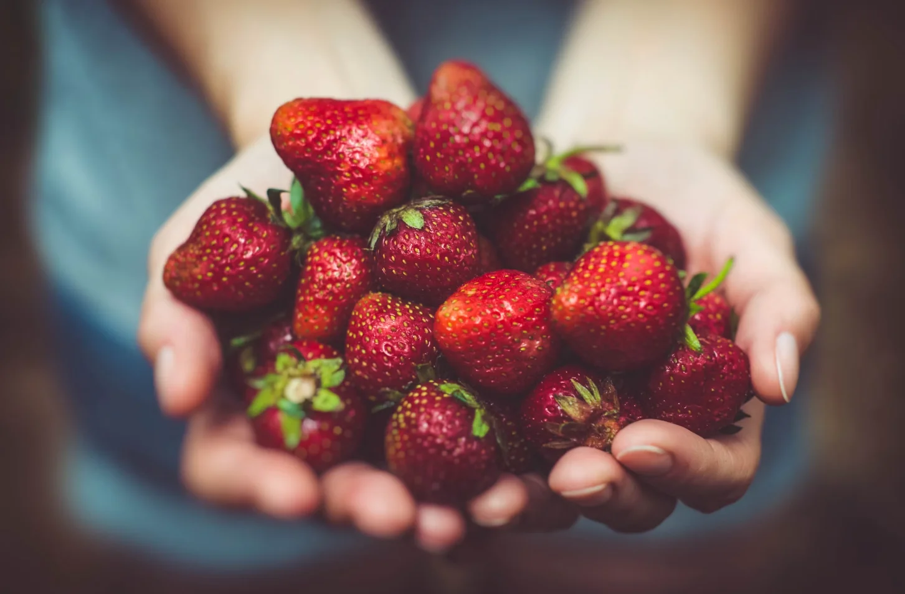
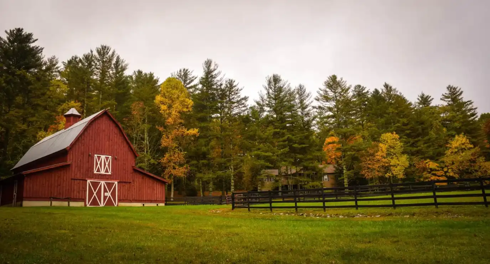
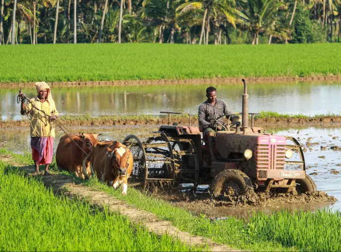
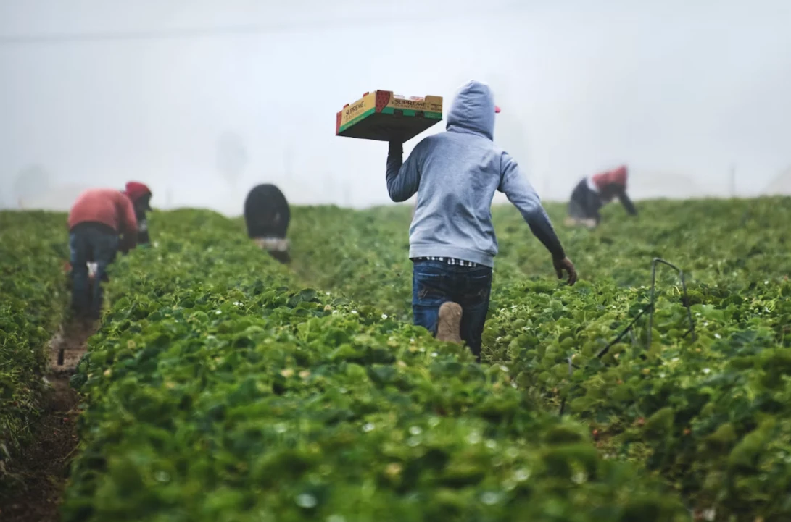

Stackly Farm stands as a testament to sustainable agriculture and family heritage. Since 1988, we've cultivated forty acres of certified organic vegetables, fruit, and pastured eggs in the heart of Willowmere Valley. Our commitment to soil health, transparency, and timeless farming practices has made us a trusted source for the region's finest produce.

From a single kitchen garden in 1988 to a certified-organic farm supplying three counties — the milestones that shaped us.
Four acres of tired pastureland become a kitchen garden, grown entirely by hand, to feed the Stackly family and their neighbors.

Stackly Farm earns USDA organic certification, formalizing a no-chemical approach the family had practiced for eight years already.
A roadside stand on Willowmere Lane becomes the farm's first direct link to the community — still open every weekend today.

Margaret's grandchildren, Eli and Tara, begin farming full-time, expanding to forty acres and adding a laying flock.

Today the farm grows over 120 open-pollinated varieties, ships weekly CSA boxes, and supplies six local restaurants.

Every decision starts with what's good for the ground — yield is a byproduct of healthy soil, never the goal itself.
No synthetic pesticides, fertilizers, or growth aids — ever. If a crop fails organically, it fails.
Anyone can walk our fields, ask about our methods, or read our certification records. Nothing is hidden.
Regenerative techniques we've refined across three generations, not textbook theory.
Every field rests under clover or rye between plantings, rebuilding nitrogen and structure instead of stripping it.
Farm and poultry waste becomes finished compost within four months, closing the loop without trucking in inputs.
Beneficial insects, crop rotation and hand-scouting keep pest pressure down — no blanket spraying, ever.
Water goes to roots, not the air between rows, cutting our usage by nearly half versus overhead sprinklers.
No bed grows the same family of crop twice in a row, breaking pest cycles and keeping soil nutrients balanced.
Hedgerows and wildflower borders left uncut through summer keep our bees and native pollinators fed.
The fields are open every weekend, and we love walking people through them.
Open Saturdays and Sundays, 8am–1pm, right on Willowmere Lane — no appointment needed.
School groups, clubs and corporate outings can book a guided walk through the fields and orchard year-round.
We welcome extra hands during spring planting and fall harvest — ask at the farm stand or through our contact page.
We currently deliver within a 60-mile radius and ship shelf-stable goods (honey, preserves) nationwide. CSA boxes are local delivery or farm-stand pickup only.
Yes — we've held USDA National Organic Program certification since 1996, alongside Certified Naturally Grown status.
Our farm stand and fields are open every Saturday and Sunday, 8am–1pm. Group tours can be arranged through our contact page.
Sign up on our Products page, choose a box size, and we'll pack whatever's ripest each week — pickup at the farm stand or local drop points.